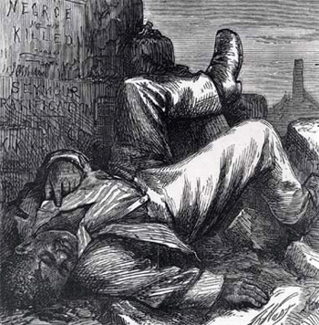

|
The Fourteenth Amendment to the United States Constitution was ratified July 28,
1868 and was designed to extend the rights of citizenship to African Americans
and to enfranchise black men. Section 1 was the key to the Amendment; it
declared that:
[A]ll persons born or naturalized in the United States and subject to the
jurisdiction thereof, are citizens of the United States and of the State wherein
they reside. No State shall make or enforce any law which shall abridge the
privileges or immunities of citizens of the United States; nor shall any State
deprive any person of life, liberty, or property, without due process of law;
nor deny to any person within its jurisdiction the equal protection of the laws.
Section 2 enforced Section 1 by stating that any denial or abridgment of

In the first two Congresses following the ratification of the
Fourteenth Amendment, seven African Americans were sworn in as Members of
Congress: Robert DeLarge, Jefferson Long, Hiram Revels, Benjamin Turner, Josiah
Walls, Joseph Rainey, and Robert Elliott.
|
voting rights to eligible men would lead to a reduction in the offending state's
national political representation.
Beyond the rights of citizenship and their bearing on suffrage, the other
provisions of the Fourteenth Amendment barred any person from office who had
previously held office and later "engaged in insurrection or rebellion." It
targeted those individuals who had violated their oaths of office; however, such
persons could be pardoned by a two-thirds vote from each house of the Congress.
Section 4 rejected the Confederate debt while acknowledging the "validity" of
the U.S. debt from the Civil War. It also invalidated claims for the "loss or
emancipation of any slave." Finally, Section 5 gave Congress power to enforce
these provisions.
The first two sections of the Fourteenth Amendment were enormously important
because they moved to guarantee equality before the law. The intent of Section
1 was to reinforce and give meaning to the Thirteenth Amendment by making states
accountable for upholding all of the rights set forth in the Constitution. The
Republican-dominated Congress was motivated by ideals of equality before the law
and outrage at the black codes, legislation passed by Southern governments that
deprived African Americans of their basic civil rights. Section 1 also
superseded the notorious Dred Scott decision where the Supreme Court
declared that blacks were not citizens of the United States. Suddenly, with the
African American population of the South no longer being counted as three-fifths
of a person (as set forth in the Constitution's three-fifths clause) in
population apportionments for seats in the House of Representatives, the South's
population exploded, allowing them far greater representation in the House.
Northern Republicans feared not only additional Southern seats in the House, but
also that this resurgent power would come at the cost of denying the vote to
African Americans in the South. Section 2 was designed to counter this
perceived Southern advantage. Representation now would be based upon the number
of actual voters, not the potential number of voters. This was a roundabout way
|

This drawing by Thomas Nast argues that Southerners
would rather kill African Americans than allow them to vote. Such
skepticism about the South ultimately led to the passage of the
Fifteenth Amendment, which was more forceful than the Fourteenth
Amendment in establishing the right of blacks to vote.
|
of encouraging Southern states to allow black suffrage, but it also implied that
states could determine who qualified to vote, earning the anger of abolitionists
campaigning for universal suffrage.
Abolitionists were not the only angry voices raised over the wording of the
Fourteenth Amendment. Feminists were outraged because for the fist time the
word "male" was added to the Constitution. Since representation was to be based
on "male inhabitants," it indirectly sanctioned sexual discrimination at the
ballot box. For many suffragists, the Fourteenth Amendment marked a critical
moment in the history of feminism. It taught leaders, such as Elizabeth Cady
Stanton and Susan B. Anthony, that women could not rely upon men for the
advocacy of their rights.
The far-reaching consequences of the Fourteenth Amendment's equal protection
clause, privileges and immunities clause, and due process clause were blunted by
the Supreme Court's early interpretations of the Amendment. In the
Slaughterhouse Cases (1873), the Court ruled that basic civil rights and
liberties fell under the authority of state governments, not the federal
government. The Court further limited the scope of the amendment in U.S. v.
Cruikshank (1876) by ruling that the federal government could only prohibit
state government violations of black rights, not the actions of individuals. In
1896 the Fourteenth Amendment was further weakened, in Plessy v.
Ferguson, the Court held that segregated railroad cars did not violate the
equal protection clause. However, in the twentieth century, the Supreme Court
has reevaluated the Fourteenth Amendment. Though still controversial, it is
considered one of the strongest Constitutional bulwarks in the defense of
freedom and equality for all citizens.
Source: Joan Waugh, ed., Facts on File Encyclopedia of American
History: Civil War and Reconstruction, 1856 to 1869 (New York: Facts on
File, 2003), 138-39.
|